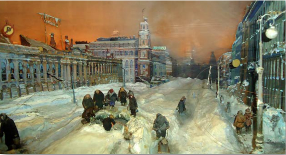

|  | Расплатиться за "билет на теплоход" знаниями о химическом веществе: - суперфосфате, который использовали ленинградцы в блокадное время, в борьбе с огнем. На Невском химкомбинате остался не вывезенный суперфосфат. Много — чуть ли не сорок тысяч тонн. Ценнейший, так называемый двойной суперфосфат, совершенно не содержащий балласта, каковым обычно является сульфат кальция. Стали думать, как переработать суперфосфат на вещества, обычно применяемые для пропитки дерева. Не завод же строить в такую пору? Потом кто-то бросил: «А может, не перерабатывать его? Давайте так попробуем...» Суперфосфат – физиологически кислое, водорастворимое фосфорное удобрение. Содержит более 12% кальция, 9% серы, 26% фосфатов, 6% азота, 0,5% магния. Использовался ценнейший, так называемый двойной суперфосфат, совершенно не содержащий балласта, каковым обычно является сульфат кальция. Фосфорные соединения всегда считались лучшими антипиренами (Антипирены (от Анти... огонь) вещества или смеси, предохраняющие древесину и другие материалы органического происхождения от воспламенения и самостоятельного горения). Они разлагаются ступенчато и каждый раз, теряя молекулы воды, поглощают теплоту горения. При разведении водой суперфосфат образует вязкую массу, которая позволяет создавать на поверхности древесины достаточно прочное покрытие. Предложение поначалу показалось наивным — суперфосфатом никто и никогда дерево не защищал. Но все же попробовали: тут же обмазали раствором удобрения обыкновенное деревянное пресс-папье. Высушили. Попытались зажечь. Дерево не загоралось. Когда пресс-папье не загорелось, решили немедленно начать систематические испытания импровизированного антипирена. Столярная мастерская получила заказ на большую партию «мерных палочек» стандартного размера: длина 15 сантиметров, сечение — квадратный сантиметр. Палочки, изготовленные из дерева одного сорта, одинаково высушенные, выкладывали в чашках штабельками, клетками, имитирующими строительные конструкции. В чашки заливали строго отмеренное количество спирта, поджигали. Отрадный эффект был налицо: палочки, обработанные суперфосфатом, не горели. Даже для того, чтобы их обуглить, требовалось очень много тепла. Суперфосфат действовал! |